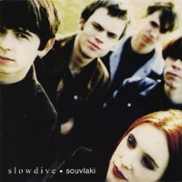

💻
Programación e Intereses
Me gusta aprender a crear cosas nuevas en la web y entender cómo funciona la tecnología paso a paso.
HECHO EN QUITO 🇪🇨
Soy de Quito y me interesa un poco la programación, además me gusta escuchar música y quisiera explicarles un poco de cómo soy.

Me gusta aprender a crear cosas nuevas en la web y entender cómo funciona la tecnología paso a paso.
Lo que me gusta crear o aprender son nuevos deportes y lograr tener nuevas metas para poder seguir avanzando en este mundo. Siento que me gusta ser alguien que pueda mejorar cada que se lo propone.
Soy un buen cocinero, me gusta cocinar con mi familia. Creo que lo que más valoro de mi vida es tener personas que me apoyen en las buenas y en las malas.
La música me logra relajar todas las veces que me siento estresado, mientras estudio o estoy en algun viaje. ¡Me encantaría que escuchan un poco!
Conoce algo que me gustaMe gusta mucho Slowdive, un grupo de Shoegaze.

Me gusta mucho los gatos, tengo dos gatos, Manchas y Lucky, mis mascotas mas queridas en estos momentos, sin ellos mi vida estaría vacía.